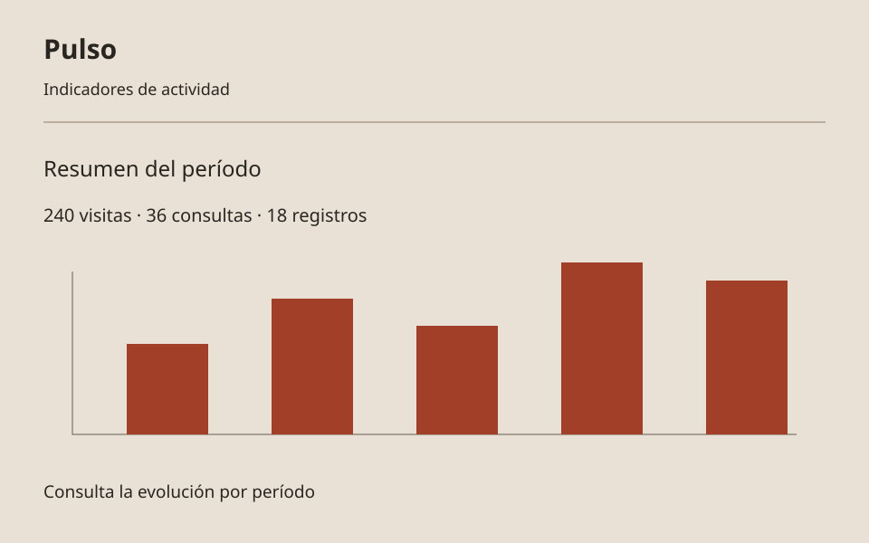
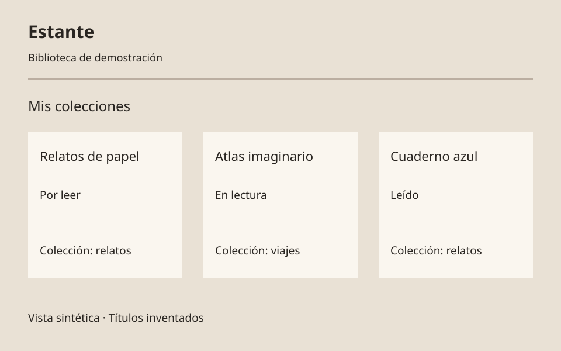
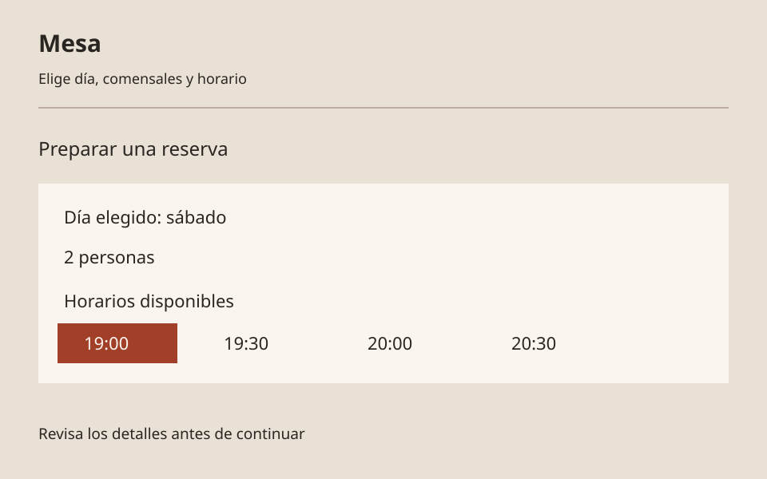

Proyectos
Portafolio de demostración · Contenido ficticio
6 proyectos
No encontramos proyectos con esos criterios

Órbita
ProductividadPanel para organizar tareas, prioridades y progreso de un equipo ficticio
Ver detalles de Órbita
Proyecto ficticio · Caso de demostración
Problema ficticio
Un equipo ficticio pierde de vista sus prioridades.
Objetivo de interfaz
Ordenar tareas y hacer visible el progreso.
Funciones principales
- Tablero por estado
- Prioridades de tareas
- Resumen de progreso

Lumbre
ComercioTienda de objetos para el hogar con catálogo, filtros y fichas de producto
Ver detalles de Lumbre
Proyecto ficticio · Caso de demostración
Problema ficticio
Una tienda inventada necesita ordenar sus objetos de ejemplo.
Objetivo de interfaz
Facilitar la exploración del catálogo.
Funciones principales
- Catálogo de objetos
- Filtros por colección
- Fichas de producto

Travesía
ViajesExplorador de destinos e itinerarios de ejemplo
Ver detalles de Travesía
Proyecto ficticio · Caso de demostración
Problema ficticio
Una viajera ficticia necesita comparar rutas inventadas.
Objetivo de interfaz
Ayudar a explorar destinos y organizar un itinerario.
Funciones principales
- Explorador de destinos
- Comparación de rutas
- Itinerario de ejemplo

Pulso
DatosDashboard con indicadores y gráficos generados con datos sintéticos
Ver detalles de Pulso
Proyecto ficticio · Caso de demostración
Problema ficticio
Un equipo inventado necesita interpretar actividad sintética.
Objetivo de interfaz
Presentar indicadores y tendencias con claridad.
Funciones principales
- Indicadores resumidos
- Gráficos de actividad
- Selección de períodos

Estante
CulturaBiblioteca personal de demostración para organizar lecturas y colecciones
Ver detalles de Estante
Proyecto ficticio · Caso de demostración
Problema ficticio
Una biblioteca ficticia tiene lecturas sin organizar.
Objetivo de interfaz
Facilitar el seguimiento de lecturas y colecciones.
Funciones principales
- Colecciones temáticas
- Estado de lectura
- Ficha de cada libro

Mesa
ReservasInterfaz para consultar horarios y preparar una reserva ficticia
Ver detalles de Mesa
Proyecto ficticio · Caso de demostración
Problema ficticio
Un local inventado necesita mostrar disponibilidad de ejemplo.
Objetivo de interfaz
Guiar la preparación de una reserva sin enviarla.
Funciones principales
- Consulta de horarios
- Selección de comensales
- Resumen de reserva ficticia